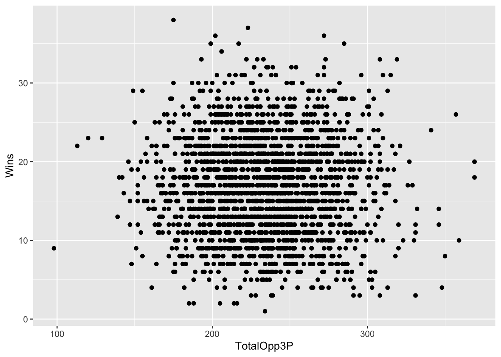
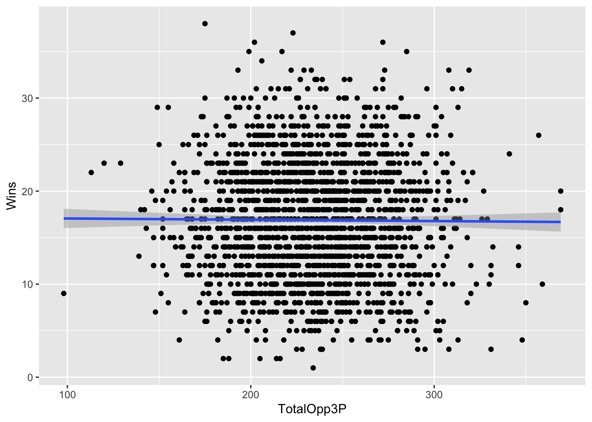
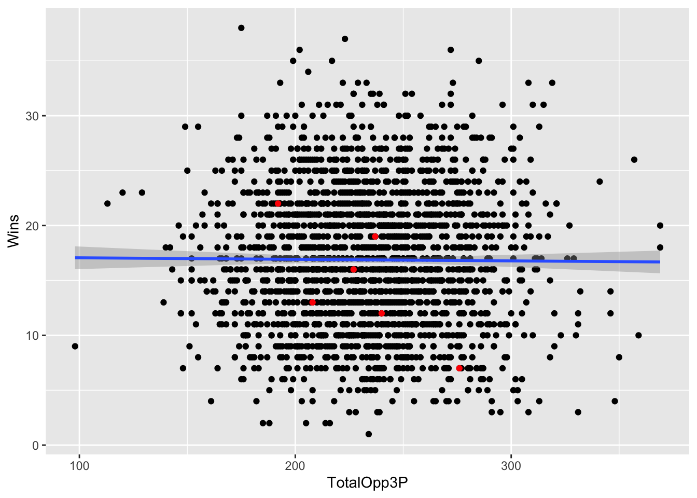
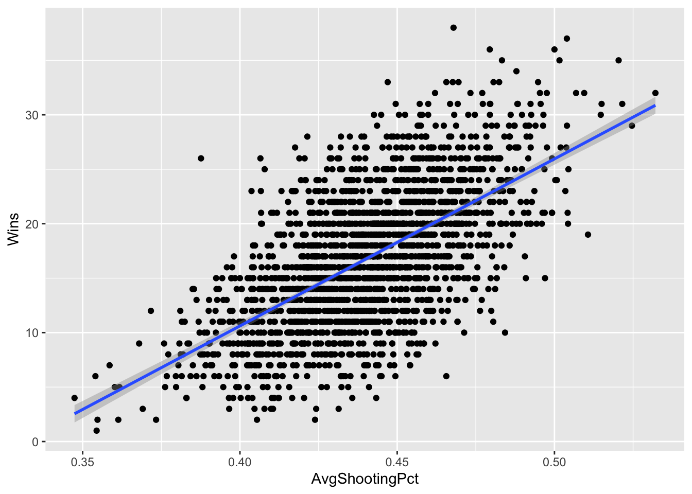

library(tidyverse)22 Scatterplots
On the Monday, Sept. 21, 2020 edition of the Pick Six Podcast, Omaha World Herald reporter Sam McKewon talked a little about the Nebraska mens basketball team. Specifically the conversation was about a new roster release, and how the second year of Fred Hoiberg ball was going to look very different, starting with the heights of the players. After a near complete roster turnover, the players on the team now were nearly all taller than 6’4”, and one of the shorter ones is penciled in as the starting point guard.
Why is that important? One reason, McKewon posited, is that teams made a lot of three point shots on Nebraska. In fact, Nebraska finished dead last in the conference in three points shots made against them. McKewon chalked this up to bad perimeter defense, and that Nebraska needed to improve it. Being taller – or more specifically having the longer arms that go with being taller – will help with that, McKewon said.
Better perimeter defense, better team.
Well, we know how the season went: 7 wins, same as the previous year.
But the question before you is this: is what McKewon said true? Does keeping a lid on your opponent’s ability to score three pointers mean more wins?
This is what we’re going to start to answer today. And we’ll do it with scatterplots and regressions. Scatterplots are very good at showing relationships between two numbers.
First, we need libraries and every college basketball game from the 2019-2020 season. Why that season? Because I did this with the COVID season and everything was wonky and made no sense. To make it make sense, you had to do a ton of twisting and turning and that was pointless. What we’re interested in is less about a specific team and more about a general point: Are these numbers related and by how much? What can they tell you about your team in general?
For this walkthrough:
Load the tidyverse.
And the data.
logs <- read_csv("data/logs1520.csv")Rows: 68617 Columns: 44
── Column specification ────────────────────────────────────────────────────────
Delimiter: ","
chr (6): HomeAway, Opponent, W_L, Team, Conference, season
dbl (36): X1, Game, TeamScore, OpponentScore, TeamFG, TeamFGA, TeamFGPCT, T...
lgl (1): Blank
date (1): Date
ℹ Use `spec()` to retrieve the full column specification for this data.
ℹ Specify the column types or set `show_col_types = FALSE` to quiet this message.To do this, we need all teams and their season stats. How much, team to team, does a thing matter? That’s the question you’re going to answer.
In our case, we want to know how much do three point shots made influence wins? How much difference can we explain in wins by knowing how many threes the other team made against you? We’re going to total up the number of threes each team allowed and their season wins in one swoop.
To do this, we need to use conditional logic – case_when in this case – to determine if the team won or lost the game. In this case, we’ll create a new column called winloss. Case when statements can be read like this: When This is True, Do This. This bit of code – which you can use in a lot of contexts in this class – uses the grepl function to look for the letter W in the W_L column and, if it finds it, makes winloss 1. If it finds an L, it makes it 0. Sum your winloss column and you have your season win total. The reason we have to use grepl to find W or L is because Sports Reference will record overtime wins differently than regular wins. Same with losses.
winlosslogs <- logs |>
mutate(
winloss = case_when(
grepl("W", W_L) ~ 1,
grepl("L", W_L) ~ 0)
)Now we can get a dataframe together that gives us the total wins for each team, and the total three point shots made. We’ll call that new dataframe threedef.
threedef <- winlosslogs |>
group_by(Team, season) |>
summarise(
Wins = sum(winloss),
TotalOpp3P = sum(Opponent3P)
) |> na.omit()`summarise()` has grouped output by 'Team'. You can override using the
`.groups` argument.Now let’s look at the scatterplot. With a scatterplot, we put what predicts the thing on the X axis, and the thing being predicted on the Y axis. In this case, X is our three pointers given up, y is our wins.
ggplot() +
geom_point(
data=threedef,
aes(x=TotalOpp3P, y=Wins)
)
Let’s talk about this. This seems kind of random, but clustered around the middle. There’s not really a clear pattern here. But can we get a better sense of this? Yes, by adding another geom – geom_smooth. It’s identical to our geom_point, but we add a method to the end, which in this case we’re using the linear method or lm.
ggplot() +
geom_point(data=threedef, aes(x=TotalOpp3P, y=Wins)) +
geom_smooth(data=threedef, aes(x=TotalOpp3P, y=Wins), method="lm")`geom_smooth()` using formula = 'y ~ x'
A straight line across is bad. It means there’s no pattern here. The numbers don’t suggest anything. The dots are very spread out. Which is a clue that you should be asking a question here: how strong of a relationship is this? How much can threes given up explain wins? Can we put some numbers to this?
Of course we can. We can apply a linear model to this – remember Chapter 9? We’re going to create an object called fit, and then we’re going to put into that object a linear model – lm – and the way to read this is “wins are predicted by opponent threes”. Then we just want the summary of that model.
fit <- lm(Wins ~ TotalOpp3P, data = threedef)
summary(fit)
Call:
lm(formula = Wins ~ TotalOpp3P, data = threedef)
Residuals:
Min 1Q Median 3Q Max
-15.8715 -4.8477 0.0676 4.1383 21.0459
Coefficients:
Estimate Std. Error t value Pr(>|t|)
(Intercept) 17.199150 0.893730 19.244 <2e-16 ***
TotalOpp3P -0.001400 0.003773 -0.371 0.711
---
Signif. codes: 0 '***' 0.001 '**' 0.01 '*' 0.05 '.' 0.1 ' ' 1
Residual standard error: 6.265 on 2104 degrees of freedom
Multiple R-squared: 6.547e-05, Adjusted R-squared: -0.0004098
F-statistic: 0.1378 on 1 and 2104 DF, p-value: 0.7106Remember from Chapter 9: There’s just a few things you really need.
The first thing: R-squared. In this case, the Adjusted R-squared value is -0.0004098, which we can interpret as the number of threes the opponent makes predicts about a teeny tiny percent of the variance in wins. Which sounds not great.
Second: The P-value. We want anything less than .05. If it’s above .05, the difference between them is not statistically significant – it’s probably explained by random chance. In our case, we have 0.7106. Is that more than .05? Yes. Yes it is. So this is random. There’s no relationship between the number of threes the opponent makes and the number of wins a team has.
Normally, we’d stop here, but let’s look at the third element: The coefficient. In this case, the coefficient for TeamOpp3P is -0.001400. What this model predicts, given that and the intercept of 17.199150, is this: Every team starts with about 17 wins. For every 100 three pointers the other team makes, you lose .14 games off that total. So if you give up 100 threes in a season, you’ll be a 17 win team. Give up 200, you’re closer to a 16 win team, and so on. How am I doing that? Remember your algebra and y = mx + b. In this case, y is the wins, m is the coefficient, x is the number of threes given up and b is the intercept.
Let’s use Nebraska as an example. They had 276 threes scored on them in the 2019-2020 season.
y = -0.001400 * 276 + 17.199150 or 16.8 wins.
How many wins did Nebraska have? 7.
What does that mean? It means that as disappointing a season as it was, Nebraska UNDERPERFORMED according to this model. But our R-squared is so small that even if this weren’t random, it would be largely pointless. Put another way: more than 99 percent of the difference in wins between teams is predicted by something else.
Where is Nebraska on the plot? We know we can use layering for that.
nu <- threedef |> filter(Team == "Nebraska Cornhuskers")ggplot() +
geom_point(data=threedef, aes(x=TotalOpp3P, y=Wins)) +
geom_smooth(data=threedef, aes(x=TotalOpp3P, y=Wins), method="lm") +
geom_point(data=nu, aes(x=TotalOpp3P, y=Wins), color="red")`geom_smooth()` using formula = 'y ~ x'
22.1 Let’s see it work
One thing we do know is related is shooting percentage. Shoot better, win games. Simple. But how well does that work?
We could just average together each team’s shooting night, but this isn’t the same thing as the season shooting average. It’s the average of shooting percentages. To get the season average, we have to sum attempts and makes and do the math ourselves. Averaging the percentages will get us close, but be careful when you do things like this that you’re describing your number correctly.
Let’s do this the hard – read: correct – way.
shooting <- winlosslogs |>
group_by(Team, season) |>
summarise(
Wins = sum(winloss),
Shots = sum(TeamFGA),
Makes = sum(TeamFG)
) |>
mutate(AvgShootingPct = Makes/Shots) |>
na.omit()`summarise()` has grouped output by 'Team'. You can override using the
`.groups` argument.Now we can chart it and see what our relationship looks like.
ggplot() +
geom_point(data=shooting, aes(x=AvgShootingPct, y=Wins)) +
geom_smooth(data=shooting, aes(x=AvgShootingPct, y=Wins), method="lm")`geom_smooth()` using formula = 'y ~ x'
This is what a positive relationship looks like – sloping up and to the right. The better you shoot, the more you win. If it were reversed – the better you shot, the fewer wins you got, the line would start at the top left and go down to the right. The direction of the line indicates the relationship between the numbers.
Let’s get our linear regression stats.
shootfit <- lm(Wins ~ AvgShootingPct, data = shooting)
summary(shootfit)
Call:
lm(formula = Wins ~ AvgShootingPct, data = shooting)
Residuals:
Min 1Q Median 3Q Max
-14.6777 -3.3738 -0.0529 3.0892 17.2843
Coefficients:
Estimate Std. Error t value Pr(>|t|)
(Intercept) -50.733 1.862 -27.24 <2e-16 ***
AvgShootingPct 153.367 4.218 36.36 <2e-16 ***
---
Signif. codes: 0 '***' 0.001 '**' 0.01 '*' 0.05 '.' 0.1 ' ' 1
Residual standard error: 4.91 on 2106 degrees of freedom
Multiple R-squared: 0.3857, Adjusted R-squared: 0.3854
F-statistic: 1322 on 1 and 2106 DF, p-value: < 2.2e-16The p-value isn’t random. The adjusted R-squared is pushing 40 percent. We’ve got something here. Let’s use our coefficents to look at Nebraska’s 2019-2020 season (not the COVID season, because all the nunmbers are super weird in that season).
(153.942 * .405) + -51.155 [1] 11.19151So this model says that based only on Nebraska’s shooting percentage, they should have won 11 games. They won 7. So per our model, Nebraska underperformed. Obviously there’s room for improvement here, but you can see the power in scatterplots + regression.